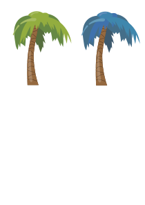

Palmeras Tree
1.1 Convertir a SVG
Des de casa, he intentat obrir la imatge de Palmeres.eps en l’inkscape i em sortia el següent error:

He mirat un tutorial per intentar arreglar-ho però no ha funcionat: Tutorial
Finalment he decidit fer servir un convertidor online i gratis: Convertidor
1.2 Obrir Palmeres.svg
Per obrir la foto anem a Archivo → Abrir

I seleccionem allà on la tenim guardada.

1.3 Retalla Palmera
Un cop tenim oberta la foto, hi ha una icona a dalt a l’esquerra per seleccionar els objectes tocats, en aquest cas la palmera que volem.

Un cop seleccionada fem Ctrl + C i obrim un arxiu Inkscape buit, quan l’obrim fem Ctrl + V i l'enganxem en aquest cas 2 cops:

1.4 Canviar Color Palmera
Per canviar el color, no he trobat com seleccionar tot i fer-ho per tant he anat fent fulla per fulla selecciono la part que vull canviar, vaig a relleno i borde i trio el color:

Una altre manera ho podriem fer a traves de codi, si canviem el numero del fill:

Així fins acabar.
Instagram Logo
Seleccionem el logo d'Instagram i fem els mateixos pasos que les palmeres

Un cop tenim les dues, a la de la dreta li canviem els colors que volem, ho podem fer així o a traves de codi:

Resusltat final:
Create Logo
Aquest és el logo de la meva pagina: